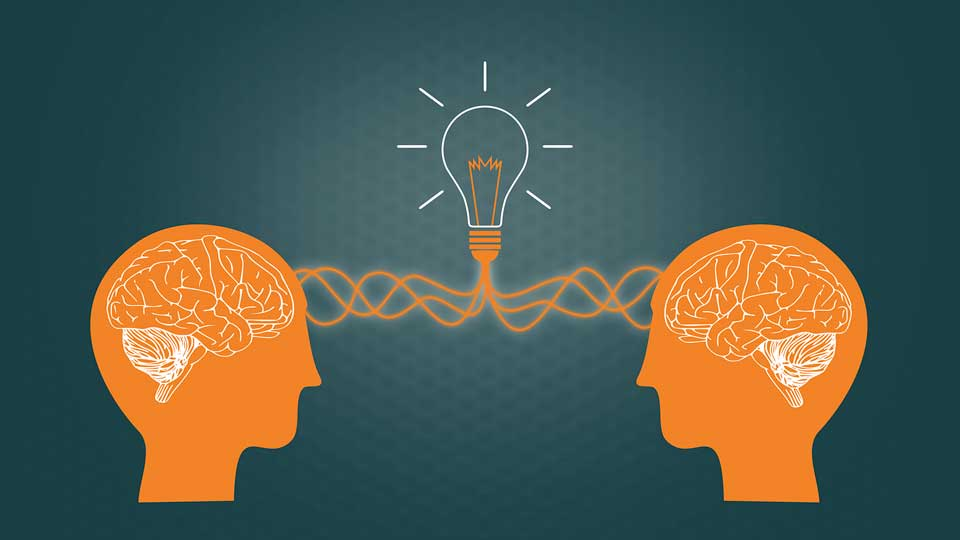

Listas
Soft Skills
- Objetividade
- Adaptabilidade
- Trabalho em equiper
Soft Skills Mais Requisitadas
- Inteligência emocional
- Liderança
- Pensamento Crítico
Soft Skills Subcategorizados
- Resiliência
- Capacidade de se adaptar a mudanças, principalmente em situações críticas
- Encarar as mudanças de forma mais tranquila e proporcionar soluções com agilidade
Autorregulação
- Reconhecer as emoções e administrá-las, ao invés de sucumbir a elas
- Reações menos impulsivas e mais conscientes